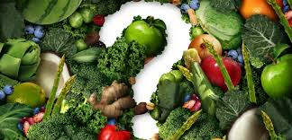

Nutrition

Alimentation : pendant et après le cancer
Les facteurs nutritionnels peuvent avoir un impact pendant et après le cancer. Ils peuvent avoir des effets délétères ou bénéfiques selon les localisations de cancer.
comme un événement opportun pour adopter des comportements plus sains et entamer une démarche de prévention (prévention tertiaire), incluant notamment :
- le sevrage tabagique
- la réduction de la consommation d’alcool
- la promotion de comportements nutritionnels adaptés avec la pratique régulière d’activités physiques adaptées.
ÉVALUER L’ÉTAT NUTRITIONNEL TOUT AU LONG DU PARCOURS DE SOINS
Il est impératif que le médecin traitant évalue votre état nutritionnel tout au long du parcours de soins. Il constitue un enjeu pour permettre la réussite des traitements.
ALIMENTS ET COMPLÉMENTS ALIMENTAIRES
Pour l’ensemble des patients, lorsque cela est adapté, il est conseillé de suivre les recommandations nutritionnelles valant pour la population générale.
Pour tenir compte des possibles interactions délétères avec les traitements et les compléments alimentaires, il est déconseillé aux patients atteints de cancer d’en consommer, en l’absence d’indication médicale et de déficit en nutriments nécessitant une supplémentation.
De rares études existent sur l’impact de certains champignons et plantes médicinales chinoises après le diagnostic d’un cancer. Dans l’état actuel des connaissances, il est déconseillé aux patients de s’auto administrer ces extraits ou décoctions pendant les traitements des cancers.
LE JEÛNE THÉRAPEUTIQUE
Pendant les traitements, il est déconseillé de pratiquer le jeûne thérapeutique ou un régime restrictif. L’analyse des connaissances scientifiques disponibles ne permet pas de conclure à l’intérêt de ces régimes au cours des traitements de cancers. De plus, ils peuvent être à l’origine d’une perte de poids et de masse musculaire suggérant un risque d’aggravation de la dénutrition et de la sarcopénie.
Manger plus sain, mais pas à contre-cœur
En théorie, il est toujours recommandé d'avoir une alimentation saine. Mais en pratique, il est parfois préférable de maintenir le plus longtemps possible les habitudes alimentaires antérieures à la maladie. Changer ces habitudes exigerait une énergie qu'il vaut mieux conserver en priorité pour les traitements.
Quoi qu'il en soit, les personnes qui souhaitent un corps sain ont tout intérêt à adopter une alimentation plus saine. Boire suffisamment d'eau (1 à 1,5 litre par jour), manger chaque jour un certain nombre de portions de légumes, de fruits et d'aliments complets (pain gris, pâtes complètes, riz brun, ...) sont des éléments importants. À condition de les intégrer avec conviction aux habitudes alimentaires. Ces conseils ne doivent jamais être suivis à contrecœur. Manger « sain » à contrecœur est une perte d'énergie. Cela peut avoir des conséquences néfastes sur l'état nutritionnel et, par conséquent, sur la qualité de vie
Un bon état nutritionnel
Le maintien d'un bon état nutritionnel est en effet particulièrement important pour lutter contre la maladie et augmenter les chances de réussite du traitement. Le maintien d'un « bon » état nutritionnel est avant tout lié à un apport en protéines et calories suffisant. Le fait que ces calories et protéines proviennent, à ce stade, d'une alimentation moins saine, est d'importance secondaire. Des plaintes spécifiques et des effets secondaires liés au traitement peuvent compliquer le respect de bonnes habitudes alimentaires. Une détérioration de l’état nutritionnel peut rapidement mener à une perte de poids. Dans ce cas, un apport d’énergie et de protéines suffisant prendra la priorité sur des choix alimentaires équilibrés. Cela passe notamment par la consommation d’aliments qui « font envie », même si, durant cette période, l’envie fait souvent choisir une nourriture peu saine ou peu variée. Une autre solution est d’opter pour des aliments riches en énergie.